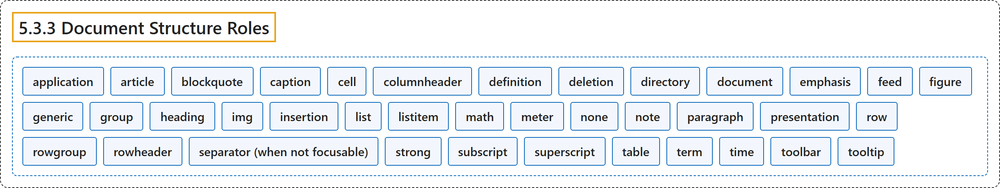

5.3.3 Document Structure Roles
Classification

Glossary
| Term | Definition | 中文翻译 | Source |
|---|---|---|---|
| 5.3.3 Document Structure Roles 文档结构角色 |
"The following roles describe structures that organize content in a page." | 下列角色描述在页面中组织内容的结构。 | World Wide Web Consortium, 2023, section 5.3.3 |
| application 应用 |
"A structure containing one or more focusable elements requiring user input, such as keyboard or gesture events, that do not follow a standard interaction pattern supported by a widget role." | 一种结构，包含一个或多个需要用户输入的可聚焦元素（如键盘或手势事件），它们不遵循控件角色所支持的标准交互模式。 | World Wide Web Consortium, 2023, section 5.4, application |
| article 文章 |
"A section of a page that consists of a composition that forms an independent part of a document, page, or site." | 页面的一节，由一篇构成文档、页面或站点的独立部分的作品组成。 | World Wide Web Consortium, 2023, section 5.4, article |
| blockquote 块引用 |
"A section of content that is quoted from another source." | 引自其他来源的一段内容。 | World Wide Web Consortium, 2023, section 5.4, blockquote |
| caption 标题说明 |
"Visible content that names, and may also describe, a figure, table, grid, or treegrid." | 可见内容，用来命名并可能描述图、表格、网格或树形网格。 | World Wide Web Consortium, 2023, section 5.4, caption |
| cell 单元格 |
"A cell in a tabular container." | 表格式容器中的单元格。 | World Wide Web Consortium, 2023, section 5.4, cell |
| columnheader 列标题 |
"A cell containing header information for a column." | 包含列的标题信息的单元格。 | World Wide Web Consortium, 2023, section 5.4, columnheader |
| definition 定义 |
"A definition of a term or concept." | 术语或概念的定义。 | World Wide Web Consortium, 2023, section 5.4, definition |
| deletion 删除 |
"A deletion contains content that is marked as removed or content that is being suggested for removal." | 删除包含标记为已移除的内容，或建议移除的内容。 | World Wide Web Consortium, 2023, section 5.4, deletion |
| directory 目录 |
"[Deprecated in ARIA 1.2] A list of references to members of a group, such as a static table of contents." | [在 ARIA 1.2 中已弃用] 指向组成员的引用列表，例如静态目录。 | World Wide Web Consortium, 2023, section 5.4, directory |
| document 文档 |
"An element containing content that assistive technology users may want to browse in a reading mode." | 一种元素，其内容是辅助技术用户可能想要以阅读模式浏览的。 | World Wide Web Consortium, 2023, section 5.4, document |
| emphasis 强调 |
"One or more emphasized characters." | 一个或多个被强调的字符。 | World Wide Web Consortium, 2023, section 5.4, emphasis |
| feed 信息流 |
"A scrollable list of articles where scrolling may cause articles to be added to or removed from either end of the list." | 可滚动的文章列表，滚动可能使文章在列表任一端被添加或移除。 | World Wide Web Consortium, 2023, section 5.4, feed |
| figure 图 |
"A perceivable section of content that typically contains a graphical document, images, code snippets, or example text." | 可感知的一段内容，通常包含图形文档、图像、代码片段或示例文本。 | World Wide Web Consortium, 2023, section 5.4, figure |
| generic 通用容器 |
"A nameless container element that has no semantic meaning on its own." | 无名称的容器元素，它本身没有语义。 | World Wide Web Consortium, 2023, section 5.4, generic |
| group 组 |
"A set of user interface objects that is not intended to be included in a page summary or table of contents by assistive technologies." | 一组用户界面对象，不打算被辅助技术收入页面摘要或目录。 | World Wide Web Consortium, 2023, section 5.4, group |
| heading 标题 |
"A heading for a section of the page." | 页面中某一节的标题。 | World Wide Web Consortium, 2023, section 5.4, heading |
| img 图像 |
"A container for a collection of elements that form an image." | 一个容器，装着构成一幅图像的一组元素。 | World Wide Web Consortium, 2023, section 5.4, img |
| insertion 插入 |
"An insertion contains content that is marked as added or content that is being suggested for addition." | 插入包含标记为已添加的内容，或建议添加的内容。 | World Wide Web Consortium, 2023, section 5.4, insertion |
| list 列表 |
"A section containing listitem elements." | 包含 listitem 元素的节。 | World Wide Web Consortium, 2023, section 5.4, list |
| listitem 列表项 |
"A single item in a list or directory." | 列表或目录中的单个项目。 | World Wide Web Consortium, 2023, section 5.4, listitem |
| math 数学 |
"Content that represents a mathematical expression." | 表示数学表达式的内容。 | World Wide Web Consortium, 2023, section 5.4, math |
| meter 计量器 |
"An element that represents a scalar measurement within a known range, or a fractional value." | 表示已知范围内的标量测量值或分数值的元素。 | World Wide Web Consortium, 2023, section 5.4, meter |
| none 无 |
"An element whose implicit native role semantics will not be mapped to the accessibility API." | 一种元素，其隐式原生角色语义不会映射到无障碍 API。 | World Wide Web Consortium, 2023, section 5.4, none |
| note 注释 |
"A section whose content is parenthetic or ancillary to the main content of the resource." | 内容对资源主内容起插入或辅助作用的节。 | World Wide Web Consortium, 2023, section 5.4, note |
| paragraph 段落 |
"A paragraph of content." | 一段内容。 | World Wide Web Consortium, 2023, section 5.4, paragraph |
| presentation 呈现 |
"An element whose implicit native role semantics will not be mapped to the accessibility API." | 一种元素，其隐式原生角色语义不会映射到无障碍 API。 | World Wide Web Consortium, 2023, section 5.4, presentation |
| row 行 |
"A row of cells in a tabular container." | 表格式容器中的一行单元格。 | World Wide Web Consortium, 2023, section 5.4, row |
| rowgroup 行组 |
"A structure containing one or more row elements in a tabular container." | 表格式容器中包含一个或多个 row 元素的结构。 | World Wide Web Consortium, 2023, section 5.4, rowgroup |
| rowheader 行标题 |
"A cell containing header information for a row." | 包含行的标题信息的单元格。 | World Wide Web Consortium, 2023, section 5.4, rowheader |
| separator (when not focusable) 分隔符 |
"A divider that separates and distinguishes sections of content or groups of menuitems." | 一种分隔线，分开并区分内容的各节或菜单项的各组。 | World Wide Web Consortium, 2023, section 5.4, separator |
| strong 加强 |
"Content that is important, serious, or urgent." | 重要、严肃或紧急的内容。 | World Wide Web Consortium, 2023, section 5.4, strong |
| subscript 下标 |
"One or more subscripted characters." | 一个或多个下标字符。 | World Wide Web Consortium, 2023, section 5.4, subscript |
| superscript 上标 |
"One or more superscripted characters." | 一个或多个上标字符。 | World Wide Web Consortium, 2023, section 5.4, superscript |
| table 表格 |
"A section containing data arranged in rows and columns." | 包含按行和列排列的数据的节。 | World Wide Web Consortium, 2023, section 5.4, table |
| term 术语 |
"A word or phrase with a corresponding definition." | 有对应定义的词或短语。 | World Wide Web Consortium, 2023, section 5.4, term |
| time 时间 |
"An element that represents a specific point in time." | 表示特定时间点的元素。 | World Wide Web Consortium, 2023, section 5.4, time |
| toolbar 工具栏 |
"A collection of commonly used function buttons or controls represented in compact visual form." | 以紧凑视觉形式呈现的一组常用功能按钮或控件。 | World Wide Web Consortium, 2023, section 5.4, toolbar |
| tooltip 工具提示 |
"A contextual popup that displays a description for an element." | 一种上下文弹出框，显示元素的描述。 | World Wide Web Consortium, 2023, section 5.4, tooltip |
References
World Wide Web Consortium. (2023, June 6). Accessible Rich Internet Applications (WAI-ARIA) 1.2 (W3C Recommendation). https://www.w3.org/TR/wai-aria-1.2/